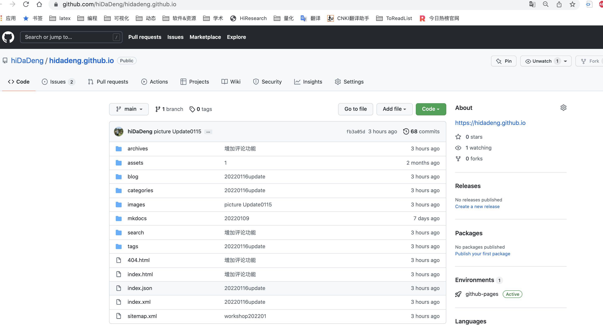
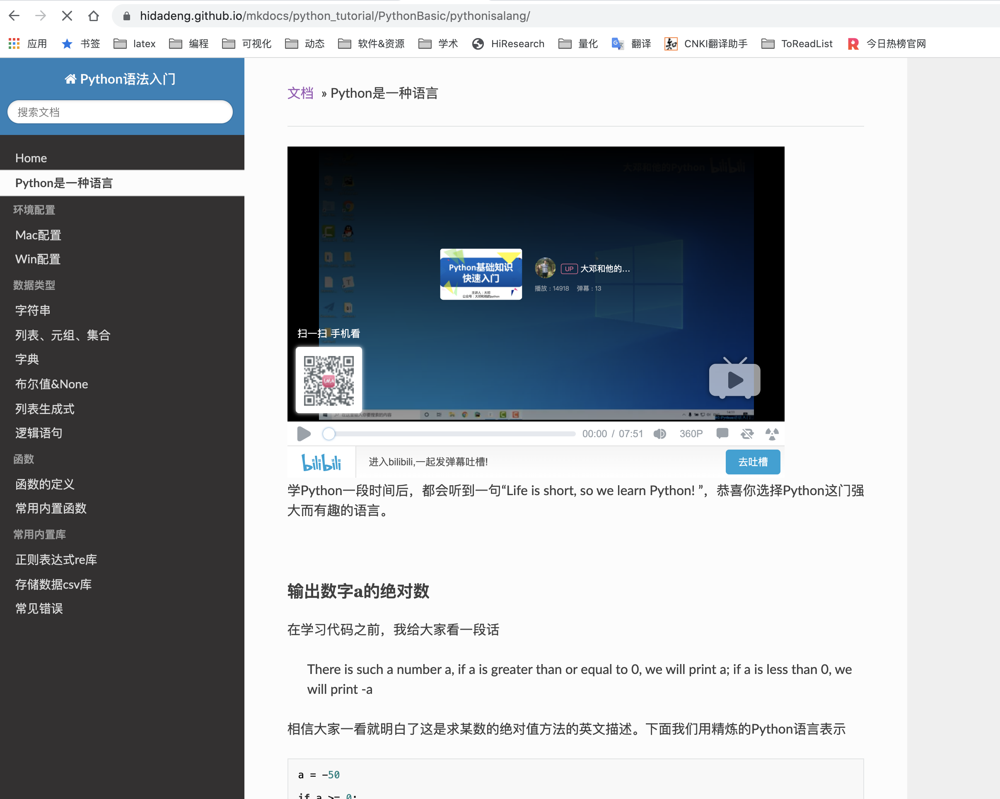

目前博客有以下几个功能特色
- Hugo 框架建站
- PaperMod网站主题风格
- MkDocs 生成技术文档
- utterances 留言功能
- 浏览器首页 学术浏览器首页
网站仓库
博客的所有代码文件存储于hiDaDeng/hidadeng.github.io。大家如果想爬大邓的博客，速度还是太慢，可以直接从这里下载项目。 
主题风格
博客之前换过很多种主题，有商务风、极客风，最后发现还是简单最好。而PaperMod不止简洁，还支持标签、搜索等功能。


技术文档
大邓课程培训Python快速入门基础教程，使用MkDocs框架生成技术文档，界面如图 
留言功能
博客使用utterances调用github仓库资源，用于存储评论数据。评论系统有点慢，需要先有github账户才可以使用。日常大家如果对Python感兴趣，有什么好的想法、资料，欢迎在博客中留言。

学术浏览器首页
如果你也是经管背景，对Python感兴趣，可以点击收藏该学术首页
如果想生成自己学科的学术首页，可以点击制作方法查看diy详情